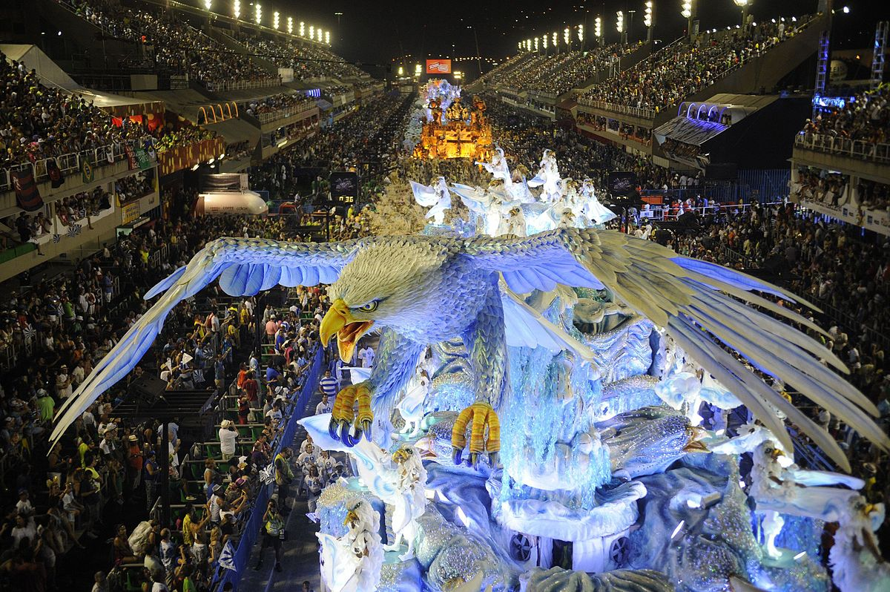

El Carnaval de Río es el evento más importante de Brasil y uno de los más famosos del mundo. Se celebra cada año en la ciudad de Río de Janeiro, con desfiles de samba, fiestas callejeras y mucha música y danza.
Este evento se celebra durante el mes de febrero o marzo, dependiendo del calendario. Atrae a millones de turistas de todo el mundo, que disfrutan de las impresionantes festividades y las coloridas comparsas que desfilan por las calles de la ciudad.

| Año | Fecha de Inicio | Fecha de Finalización |
|---|---|---|
| 2025 | 14 de febrero | 17 de febrero |
| 2026 | 6 de febrero | 9 de febrero |
| 2027 | 27 de febrero | 2 de marzo |
En el Carnaval de Río, la música y la danza son los elementos más importantes. La samba, en particular, es la estrella del evento, y las escolas de samba compiten entre sí en un desfile espectacular que tiene lugar en el Sambódromo. Las comparsas, los disfraces y las carrozas llenan las calles de color y alegría.
